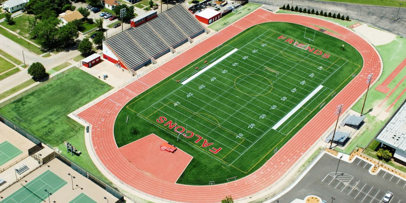
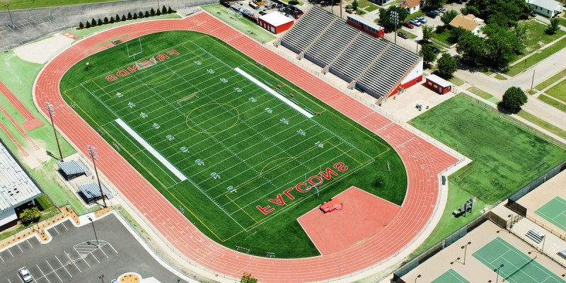
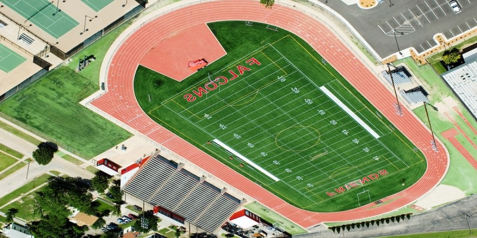

Champions League: Final Showdown
Date: March 10, 2025
Time: 7:00 PM
Teams: Thunderhawks FC vs. Red Storm United
Location: Football Stadium
It’s the final clash between two of the best teams in the world. Thunderhawks FC and Red Storm United have battled through the toughest competition, and now they face off in an epic showdown for the prestigious Champions League trophy. Expect high-intensity football with amazing goals and unforgettable moments!

Super Bowl Showdown
Date: April 5, 2025
Time: 8:30 PM
Teams: Steel City Titans vs. Coastal Waves
Location: Football Stadium
In what promises to be a legendary Super Bowl, the Steel City Titans will take on the Coastal Waves. The Titans, known for their powerful offensive game, will face off against the Waves, whose defense is feared across the league. Will the Waves hold strong, or will the Titans dominate the field? Join us to find out!

International Football Cup
Date: May 15, 2025
Time: 6:00 PM
Teams: Phoenix Fury vs. Arctic Wolves
Location: Football Stadium
The Phoenix Fury are ready to prove their strength as they take on the Arctic Wolves in this exciting international football cup. The Fury, with their quick offense, will challenge the Arctic Wolves’ tight defense and disciplined counter-attacks. It's anyone's game in this global competition for football supremacy!
